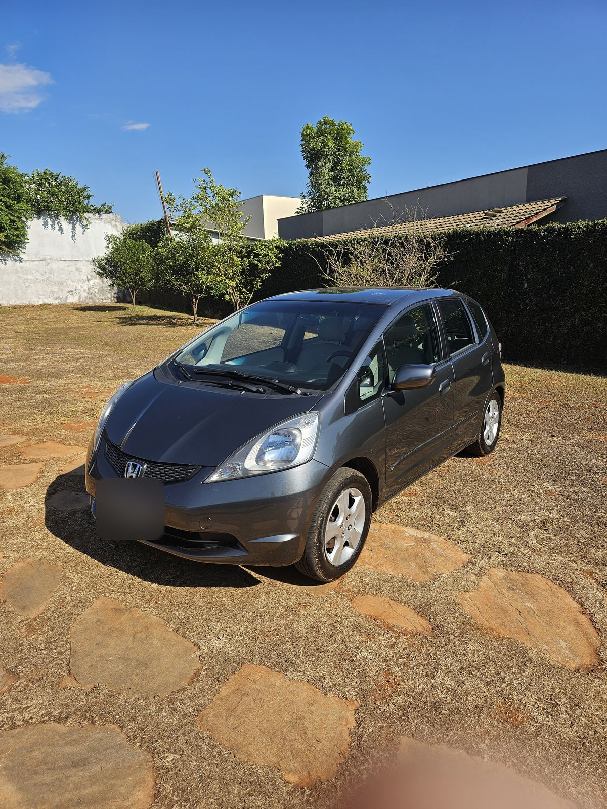
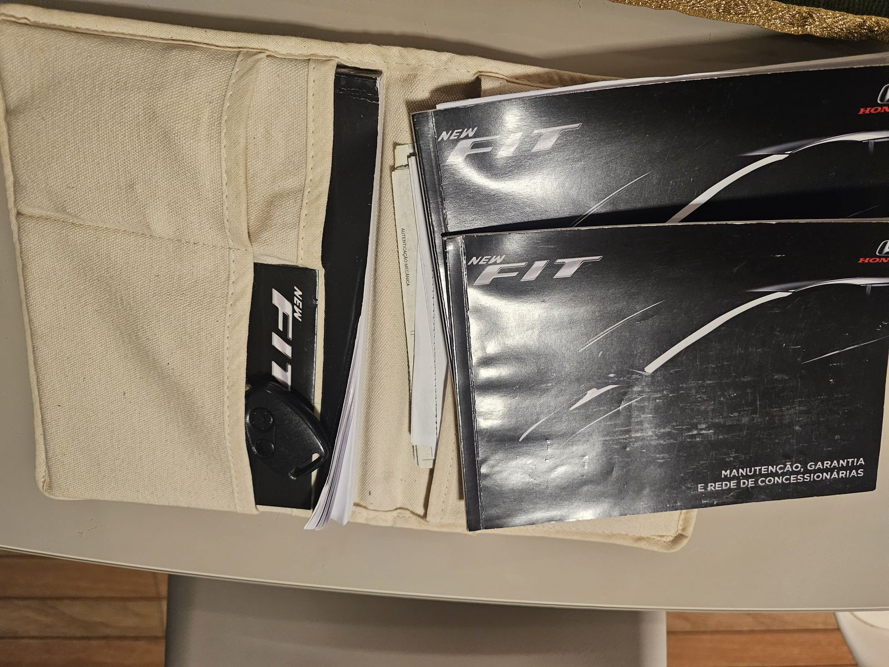
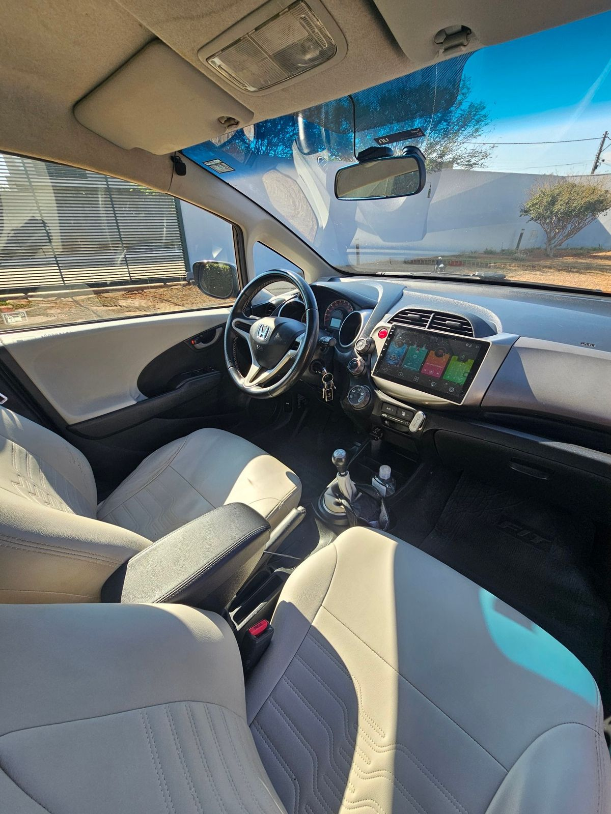
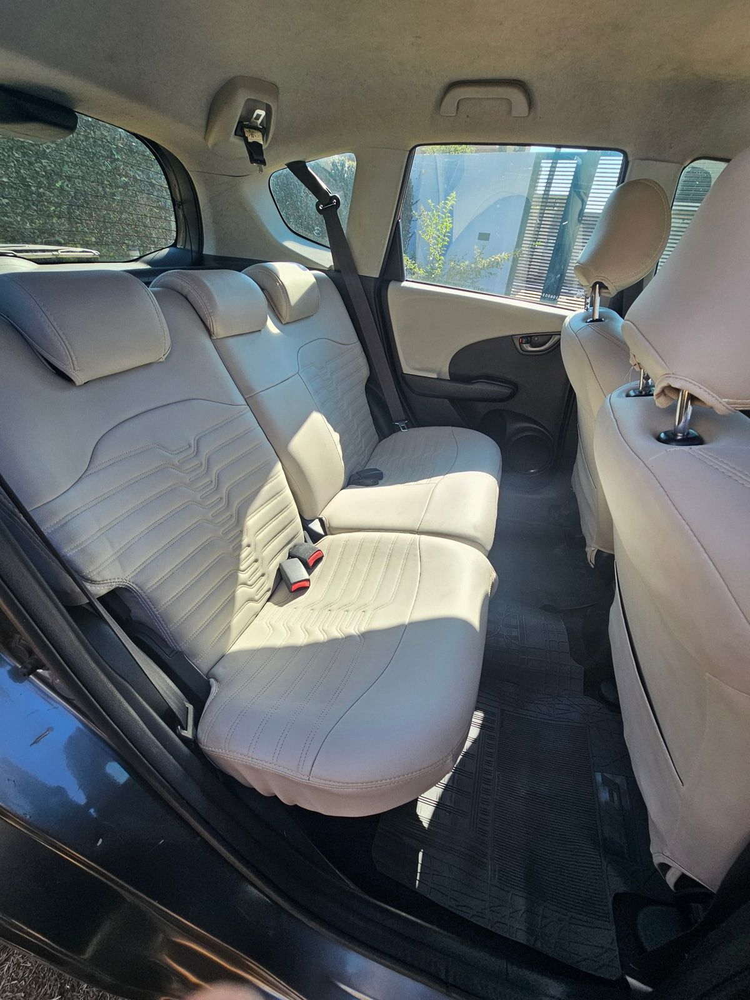
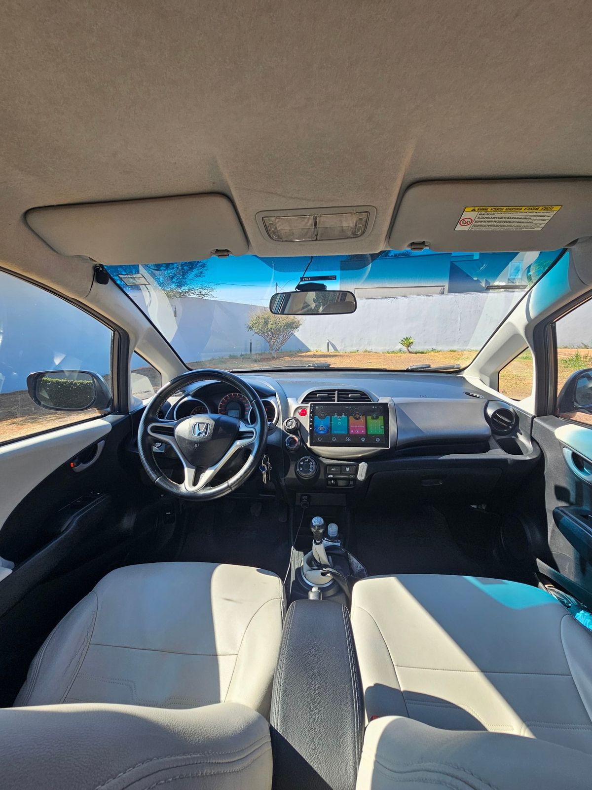
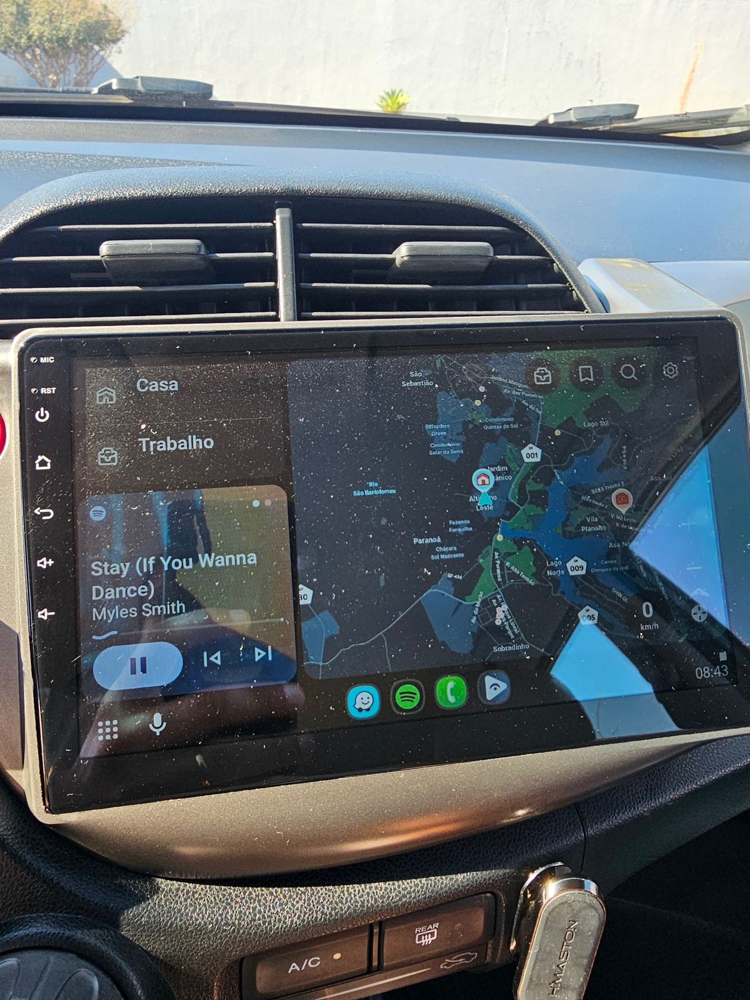
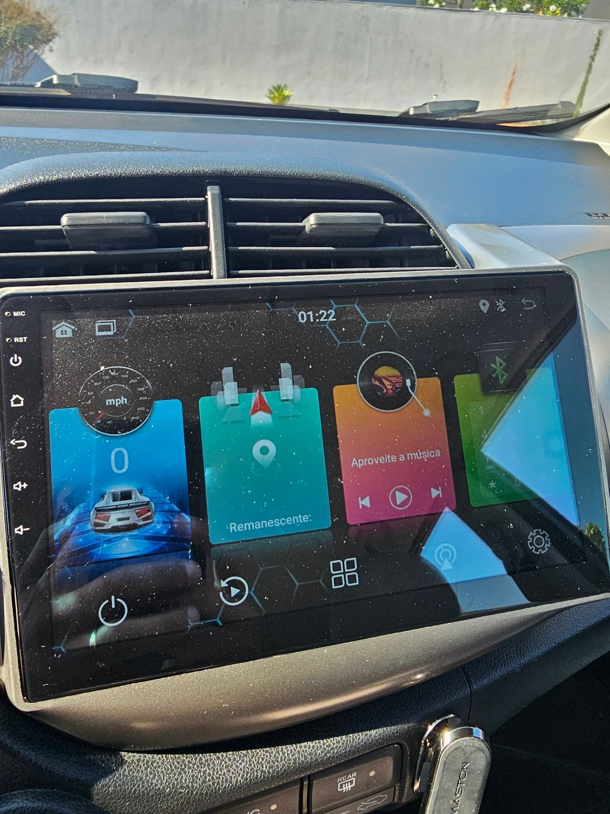

À vendaVendido · Brasília, DF
Honda
New Fit LX 1.4 2009 à venda LX 1.4 2009 vendido
Vendido
- LX 1.4
- 2009
- 199.000 km
- Câmbio manual
- Manual e chave reserva
- Tudo funcionando
ValorAnunciado por
R$ 37.500,00
Preço justo
Abaixo da tabela FIPE
Economia em relação à FIPE
R$ 2.014
5,1% abaixo do valor da tabela
2009Ano / modelo
199.000Quilômetros
3ºDono
10"Multimídia

Carro da família
Terceiro dono. História conhecida.
- 10.000 km
Um amigo nosso comprou o carro com 10.000 km.
- 2017 · 20.000 km
Compramos dele, com 20.000 km.
- Hoje · 199.000 km
Tudo funcionando.
- Histórico completo de tudo o que foi feito
- Manual do carro
- Chave reserva

Acompanha o carro
Manual e chave reserva
Tudo guardado na pasta original da Honda.
- Manual do proprietário
- Sim
- Manual de manutenção e garantia
- Sim
- Chave reserva
- Sim
- Pasta original Honda
- Sim
- Histórico do que foi feito
- Completo
- Rádio original e moldura
- Se quiser
Interior
Couro Ice


Banco de couro cor Ice, com capa personalizada e colada.
- Bancos
- Couro Ice
- Portas
- Couro Ice
- Coifa do câmbio
- Couro Ice
- Volante
- Couro
- Encosto de braço
- Sim

Volante em couro
Portas e coifa da manopla de câmbio em couro ice também.
Tecnologia
Multimídia de 10 polegadas
Kit multimídia de 10 polegadas instalado, com conector wifi para conectar no celular.
Temos o rádio original e a moldura, caso queira.


Todos os ângulos
Arraste para o lado · toque para ampliarContato
Vamos
conversar?Vendido.
Obrigado!
O Honda New Fit encontrou um novo dono. Obrigado a todos que entraram em contato e se interessaram pelo carro.